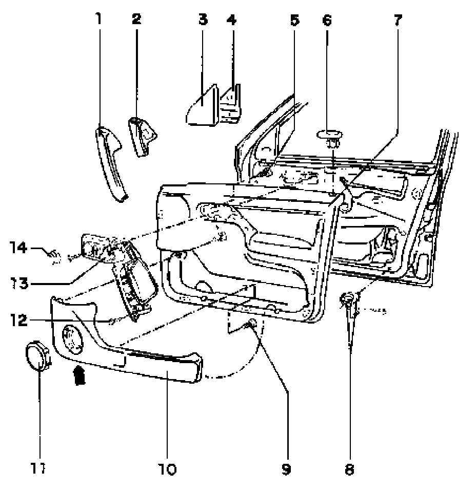

Front Door Trim, Removing and Installing
Door trim
Front door trim, removing and installing

1 - Cover
- Clipped into door/door pull
2 - Cover
- For vehicles with power windows
- Clipped into door/door pull
3 - Cover plate
- Pull off of door frame (clipped)
4 - Insulating plate
5 - Screw
- To secure door handle
- Quantity: 6
6 - Trim piece
- According to equipment level, with LED
7 - Door trim panel
8 - Securing clip
- Two- piece
9 - Screw
- To secure door tray
- Quantity: 6
10 - Door tray
- Secured by screws through rear of trim
- Speaker mounted to door tray
11 - Speaker cover
- To remove press down retaining lugs using screwdriver through opening in door tray (arrow)
12 - Screw
13 - Door handle
- Secured by screw through rear of trim
14 - Control knob
- Connected on inside opener plate